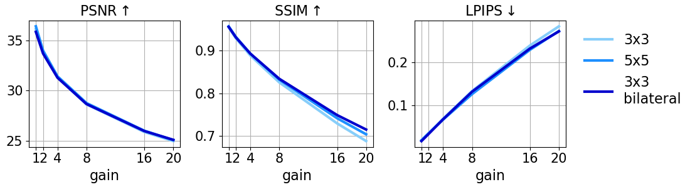

Burst denoising is now more relevant than ever, as computational photography helps overcome sensitivity issues inherent in mobile phones and small cameras. A major challenge in burst-denoising is in coping with pixel misalignment, which was so far handled with rather simplistic assumptions of simple motion, or the ability to align in pre-processing. Such assumptions are not realistic in the presence of large motion and high levels of noise. We show that Neural Radiance Fields (NeRFs), originally suggested for physics-based novel-view rendering, can serve as a powerful framework for burst denoising. NeRFs have an inherent capability of handling noise as they integrate information from multiple images, but they are limited in doing so, mainly since they build on pixel-wise operations which are suitable to ideal imaging conditions. Our approach, termed NAN, leverages inter-view and spatial information in NeRFs to better deal with noise. It achieves state-of-the-art results in burst denoising and is especially successful in coping with large movement and occlusions, under very high levels of noise. With the rapid advances in accelerating NeRFs, it could provide a powerful platform for denoising in challenging environments.


7. NAN


7. NAN

Numerical Evaluation

Comparison of Kernel Size and Bilateral in Post Processing

@inproceedings{pearl2022noiseaware,
title={NAN: Noise-Aware NeRFs for Burst-Denoising},
author={Pearl, Naama and Treibitz, Tali and Korman, Simon},
booktitle=CVPR,
year={2022}
}